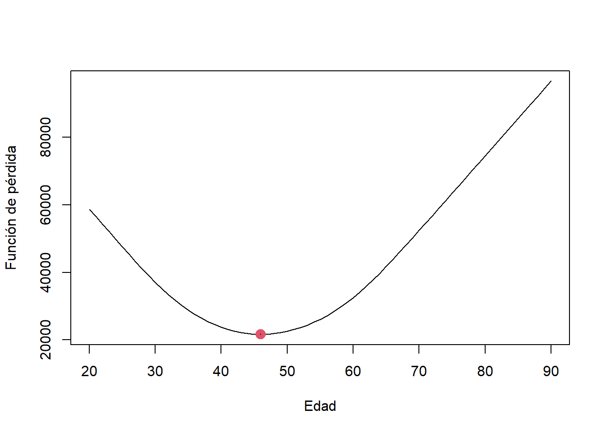

Chapter 3 Análisis bivariado
3.1 Dos variables cualitativas
Antes de iniciar, nos aseguramos de haber instalado las librerías necesarias.
En caso de no tenerlas, instalamos las librerías copiando y pegando el siguiente codigo en la consola.
install.packages("tidyverse")
install.packages("vcd")
install.packages("DescTools")
install.packages("DT")Luego podemos comenzar con el análisis de datos. Para ello, crear un nuevo script con el nombre de analisisBiva. Copiar y ejecutar cada uno de los códigos en R detallados más adelante.
3.1.1 Lectura de datos.
Leemos los datos desde SPSS con la librería haven y utilizando el enlace hacia los datos:
## Warning: package 'haven' was built under R version 4.0.5## Registered S3 methods overwritten by 'tibble':
## method from
## format.tbl pillar
## print.tbl pillar3.1.2 Exploración básica.
Exploramos variables que interesan en el análisis.
Variable C2P1: profesión
## <labelled<double>[6]>: ¿CUÁL ES SU PROFESIÓN?
## [1] 2 2 2 2 2 1
##
## Labels:
## value label
## 1 Médico
## 2 Enfermero/aVariable C2P4: sexo.
## <labelled<double>[6]>: SEXO
## [1] 2 2 2 2 2 1
##
## Labels:
## value label
## 1 Hombre
## 2 MujerVariable C2P7: Tipo de contrato.
## <labelled<double>[6]>: ¿QUÉ TIPO DE CONTRATO TIENE CON ESTE ESTABLECIMIENTO DE SALUD?
## [1] 5 5 2 2 5 5
##
## Labels:
## value label
## 1 Locaciòn de servicios (Honorarios profesionales)
## 2 Contrato Administrativo de Servicios (CAS)
## 3 Contrato a plazo fijo (sujeto a modalidad)
## 4 Nombrado, permanente
## 5 Plazo indeterminado o indefinido (D.S.728)
## 6 OtroObservamos el dataset solo con las variables de interés:
Seleccionamos los datos de los médicos con el siguiente código:
datostemp <- datossalud[,c("C2P1","C2P4","C2P7")]
names(datostemp) = c("profesion","sexo","contrato")
datos <- datostemp[datostemp$profesion==1,]Y finalmente observamos los datos:
## # A tibble: 6 x 3
## profesion sexo contrato
## <dbl+lbl> <dbl+lbl> <dbl+lbl>
## 1 1 [Médico] 1 [Hombre] 5 [Plazo indeterminado o indefinido (D.S.728)]
## 2 1 [Médico] 1 [Hombre] 5 [Plazo indeterminado o indefinido (D.S.728)]
## 3 1 [Médico] 2 [Mujer] 2 [Contrato Administrativo de Servicios (CAS)]
## 4 1 [Médico] 1 [Hombre] 5 [Plazo indeterminado o indefinido (D.S.728)]
## 5 1 [Médico] 1 [Hombre] 3 [Contrato a plazo fijo (sujeto a modalidad)]
## 6 1 [Médico] 1 [Hombre] 5 [Plazo indeterminado o indefinido (D.S.728)]3.1.3 Análisis univariado.
Ahora, realizamos el análisis de cada variable: C2P4(Sexo) y C2P7(Contrato). Observamos la tabla de frecuencias, proporciones, y gráfico de barras para cada variable:
3.1.3.1 Variable: Sexo
## <labelled<double>[6]>: SEXO
## [1] 1 1 2 1 1 1
##
## Labels:
## value label
## 1 Hombre
## 2 Mujer##
## 1 2
## 1657 562##
## 1 2
## 74.67328 25.32672De esta tabla, se observa que hay 74.7% de médicos y solo 25.3% de médicas. Podemos añadir, finalmente, un gráfico, para observar estas diferencias rápidamente.
3.1.3.2 Variable: Contratos
## <labelled<double>[6]>: ¿QUÉ TIPO DE CONTRATO TIENE CON ESTE ESTABLECIMIENTO DE SALUD?
## [1] 5 5 2 5 3 5
##
## Labels:
## value label
## 1 Locaciòn de servicios (Honorarios profesionales)
## 2 Contrato Administrativo de Servicios (CAS)
## 3 Contrato a plazo fijo (sujeto a modalidad)
## 4 Nombrado, permanente
## 5 Plazo indeterminado o indefinido (D.S.728)
## 6 Otro##
## 1 2 3 4 5 6
## 158 279 138 881 707 56##
## 1 2 3 4 5 6
## 7.120324 12.573231 6.219018 39.702569 31.861199 2.5236593.1.3.3 Opción: 2 gráficos en 1
forma_grafico <- par(mfrow=c(1,2))
barplot(100*prop.table(tabla_sexo),
ylim=c(0,100),
names.arg = c("Hombre","Mujer"),
ylab="Porcentaje")
barplot(100*prop.table(tabla_contrato),
ylim=c(0,100),col=1:6,
ylab="Porcentaje",xaxt="n")
legend(1,100,legend=c("Recibos","CAS","Plazo fijo","Nombrado","Plazo Indeterminado","Otros"),
col=1:6,bty="n",pch=15)¿Qué observo en estos resultados? (Obtener conclusiones a partir de las tablas de proporciones)
3.1.4 Análisis bivariado
3.1.4.1 Exploración
Ahora, realizaremos un análisis bivariado utilizando tablas de contingencia:
##
## 1 2 3 4 5 6
## 1 128 172 85 684 547 41
## 2 30 107 53 197 160 15Interpretación:
- 128 médicos y 30 médicas tienen contrato por locación de servicio.
- 172 médicos y 107 médicas tienen contrato CAS.
Ejercicio: Interpretar para las demás categorías de contrato.
Ahora, utilizaremos la función prop.table para obtener la tabla en proporciones; y adicionamos el parámetro margin a la función.
margin=1significa que los porcentajes estan calculados sobre la base de los totales por filas. (Los porcentajes por cada fila suman 100%)margin=2significa que los porcentajes estan calculados sobre la base de los totales por columnas. (Los porcentajes por cada columna suman 100%)
##
## 1 2 3 4 5 6
## 1 0.08 0.10 0.05 0.41 0.33 0.02
## 2 0.05 0.19 0.09 0.35 0.28 0.03Interpretación:
- Observamos que 41% de los médicos tienen contrato “Nombrado o permanente” mientras que solo el 35% de las médicas tienen contrato “Nombrado o permanente”.
- Asimismo, se observa que el 10% de los médicos tienen contrato “CAS” y un mayor porcentaje, 19%, de médicas tienen contrato “CAS”.
Ejercicio: Interpretar resultados para el porcentaje de contratos de plazo indeterminado entre hombres y mujeres.
##
## 1 2 3 4 5 6
## 1 0.81 0.62 0.62 0.78 0.77 0.73
## 2 0.19 0.38 0.38 0.22 0.23 0.27Para la interpretación comparamos la distribución condicional a cada tipo de contrato con la distribución marginal del sexo.
Interpretación:
En general, se observo que los médicos representan el 74.7% del total y las médicas solo el 25.3%. En algunos tipos de contratos, se observan diferencias con respecto a esta distribución, especialmente en CAS (2), Contrato a plazo fijo (3), y Locación de servicios(1)
- Para de los contratos de tipo CAS (Código 2), 62% son asignadas a los médicos y 38% a las médicas. Es decir, una menor proporción, comparada con el total, es asignada a los médicos.
- Para los contratos de locación de servicio (código 1), 81% son para los médicos y solo 19% para las médicas. Una mayor proporción, comparada con el total, es asignada a los médicos.
Otra forma de analizar y mostrar la relación entre las variables es con gráficos:
- Gráficos de barras.
barplot(prop.table(tabla_conti,1),
beside = T,
ylim = c(0,1),
col=c("darkblue","skyblue"),
ylab = "Proporcion")
legend( 9, 0.9,
legend=c("Hombre","Mujer"),
col=c("darkblue","skyblue"),
bty="n",
pch=15)
legend(2,1,
legend=c("1: Recibos",
"2: CAS",
"3: Plazo fijo",
"4: Nombrado",
"5: Plazo Indeterminado",
"6: Otros"),
bty="n")
O este otro gráfico de barras acumulado:
## Warning: package 'vcd' was built under R version 4.0.4## Loading required package: gridmosaicplot(table(datos$contrato,datos$sexo),
main="",
color = c("darkblue","skyblue"),
xlab = "Contratos", # label for x-axis
ylab = "Sexo" # label for y-axis
)
#abline(h=mean(datos$sexo==2))
abline(h=0.253, col=2)
¿Qué conclusiones obtiene a partir de este análisis? ¿Hay relación entre el sexo y el tipo de contrato?
3.1.4.2 Pruebas de hipótesis.
Evaluamos si existe o no asociación entre el sexo y los tipos de contrato de manera objetiva utilizando una prueba de hipótesis.
- Definimos las hipótesis:
- \(H_O\): Hay independencia entre el sexo y el tipo de contrato.
- \(H_1\): No hay independencia entre el sexo y el tipo de contrato. (Existe asociación entre la variable sexo y el tipo de contrato)
Definimos la significancia: \(5\)%
Elegimos la prueba de hipótesis: Chi-cuadrado para la independencia.
Calculamos el estadístico de prueba y p-valor en R:
##
## Pearson's Chi-squared test
##
## data: datos$sexo and datos$contrato
## X-squared = 47.742, df = 5, p-value = 4.009e-09¿A qué conclusión llegamos con esta prueba?
- Decisión: Rechazar Ho
- Conclusión: Con una significancia del 5%, se puede afimar que existe asociación entre la variable sexo y el tipo de contrato
3.1.4.3 Medidas de asociación.
Ahora, continuamos analizando la relación entre las variables sexo y tipos de contrato. Esta vez analizamos el grado de asociación entre las variables utilizando para ello dos medidas de asociación muy conocidas.
Para los calculos en R, necesitaremos la librería DescTools.
## Warning: package 'DescTools' was built under R version 4.0.5## [1] 0.1451281## [1] 0.146681¿Qué grado de relación existe entre estas dos variables?
Recordar lo siguiente :
- Más de 0.5 Alta asociación.
- 0.3 a 0.5 Asociación moderada.
- 0.1 a 0.3 Baja asociación.
- 0 a 0.1 Muy baja (si existiese).
3.1.5 Ejercicio
Crear un nuevo script, copiar el código y realizar las modificaciones correspondientes para realizar un análisis de la asociación entre el sexo y el tipo de contrato esta vez para los enfermeros.
- Crear un reporte con sus resultados, interpretaciones y conclusiones.
- ¿Existe evidencia entre una relación entre el sexo y el tipo de contrato en el grupo de enfermeros?
- (Opcional) Si es así, ¿Cuál es el grado de asociación entre el sexo y tipo de contrato?
- (Opcional) ¿Hay una alta asociación entre estas variables?